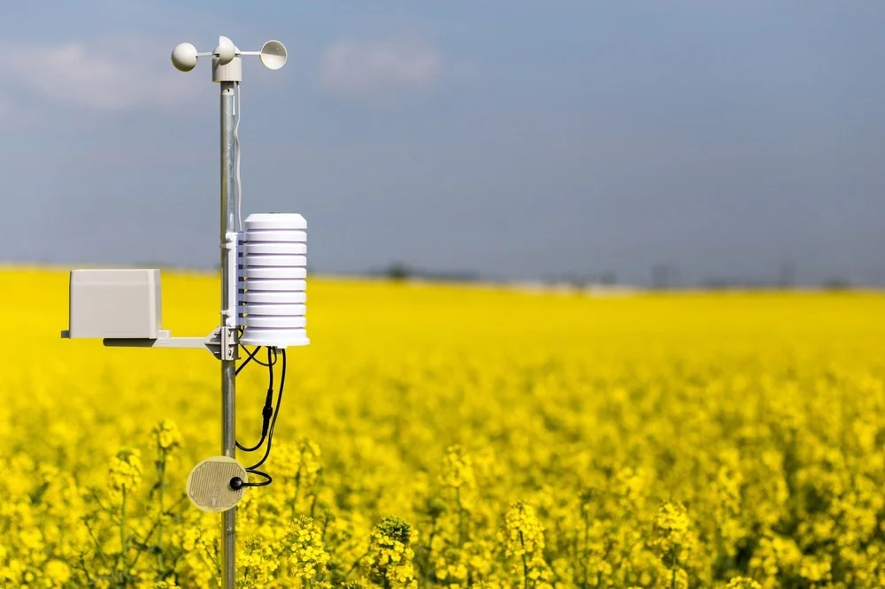

The Role of Agricultural Sensing in Sustainable Crop Protection
- Sensing technologies enable the early detection of plant disorders, which allows for the timely identification of their causes and early intervention. Early treatment typically requires fewer chemical inputs or the use of agricultural practices that help control pests more naturally. Both approaches reduce the environmental impact by limiting chemical use and are often more affordable for farmers. In contrast, delayed treatment following a high pest pressure can lead to significant crop loss.
- Biopesticides, which are eco-friendly pest control solutions, are often most effective against low to moderate infestations. Manufacturers recommend farmers plant relatively resistant varieties if they plan to rely on biopesticides. However, the efficacy of biopesticides could be greatly enhanced when combined with early detection systems. This is where agricultural sensing solutions become invaluable, as they allow infestations to be caught early, enabling more effective biopesticide use and minimizing environmental harm.